Chapter 4 Explore the data
Before one starts with the actual modeling it is crucial to get to know the data and to bring it to the correct format. This process of getting familiar with the data is well known as Exploratory Data Analysis (EDA). To do this many packages are used.[14] The most important ones will be loaded below.
library(tidyverse) # general data handling tools
library(tidymodels) # data modeling and preprocessing
# color palettes
library(viridis)
library(viridisLite)
library(patchwork) # composing of ggplotsBefore the fun can begin a quick outline of the steps performed on each data set.
- A general overview of the classes of the features and a visualization to detect any missing values.
- The distribution and the main effect on the outcome variable of each feature.
- The pairwise relationships of the predictors.
- Optionally some feature engineering.
- Using the gained knowledge to fix all pre-processing and feature engineering steps by using a
recipes::recipe.
If one is mainly interested in the models themselves one can just have a look at the recipes and skip the rest of this section.
Some might ask why no interactions of predictors are covered in this EDA. If one would use a standard OLS, lasso or ridge regression it would be very important to have a look at them but as the focus here is on tree-based gradient boosting one already includes interactions if one is not restrictive to regression stumps. So let’s start with the first data set!
4.1 Burnout data
The data is from the machine learning challenge HackerEarth Machine Learning Challenge: Are your employees burning out?. And can be downloaded here: https://www.kaggle.com/blurredmachine/are-your-employees-burning-out?select=train.csv
# load the data
burnout_data <- read_csv("_data/burn_out_train.csv")
# convert colnames to snake_case
colnames(burnout_data) <- tolower(
stringr::str_replace_all(
colnames(burnout_data),
" ",
"_"
))
# omit missing values in the outcome variable
burnout_data <- burnout_data[!is.na(burnout_data$burn_rate),]4.1.1 Train-test split
To not allow information leakage the train-test split is performed at the very start of the whole analysis.
set.seed(2)
burnout_split <- rsample::initial_split(burnout_data, prop = 0.80)
burnout_train <- rsample::training(burnout_split)
burnout_test <- rsample::testing(burnout_split)The training data set contains 17301 rows and 9 variables.
The test data set contains 4325 observations and naturally also 9 variables.
4.1.2 Quick general overview
First look at the classes of the variables.
| column | class |
|---|---|
| employee_id | character |
| date_of_joining | Date |
| gender | character |
| company_type | character |
| wfh_setup_available | character |
| designation | numeric |
| resource_allocation | numeric |
| mental_fatigue_score | numeric |
| burn_rate | numeric |
A general visualization of the whole datas set to detect missing values below.
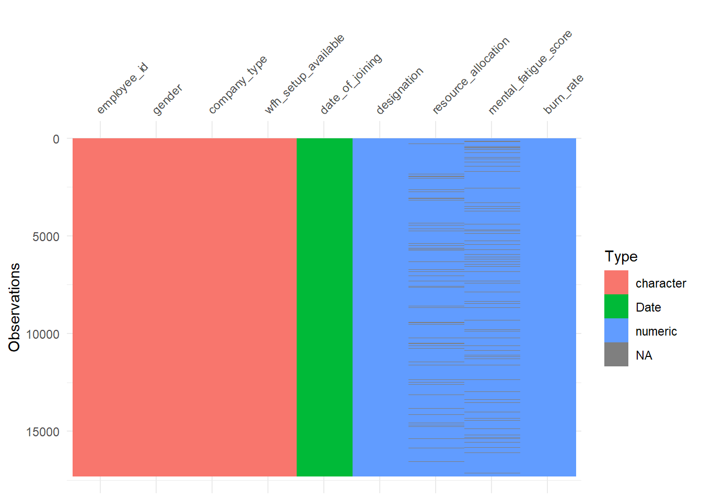
# percentage of missing values in the training data set
mean(rowSums(is.na(burnout_train)) > 0)## [1] 0.1407433As we know that XGBoost can handle missing values we do not have to be concerned. Although one could of course think about imputation or even removal.
4.1.3 What about the outcome variable?
burn_rate: For each employee telling the rate of burnout should be in \([0,1]\). The greater the score the worse the burnout (0 means no burnout at all). As the variable is continuous we have a regression task. Yet it has bounds which has to be treated with when predicting.
The five point summary below shows that the full range is covered and no invalid values are in the data.
## Min. 1st Qu. Median Mean 3rd Qu. Max.
## 0.0000 0.3100 0.4500 0.4513 0.5900 1.0000Now the distribution of the outcome.
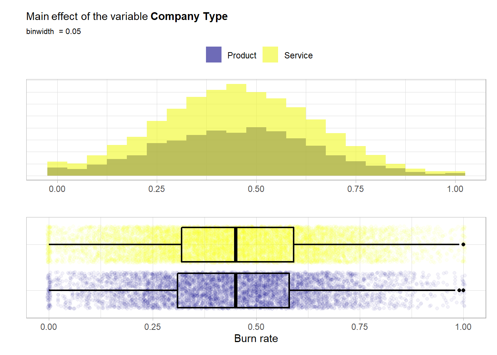
The distribution of the outcome is very much symmetrical and bell shaped around 0.5 and the whole defined region \([0,1]\) is covered quite well. Actually by overlaying a normal distribution with the sample mean \(\hat{\mu}\) and the sample standard deviation \(\hat{\sigma}^2\) as the parameters one can clearly see that the outcome almost perfectly follows a normal distribution. One could further fit a Q-Q-plot to visualize the normality but this will be omitted here as the normality of the outcome is not required for the here covered boosting model.
4.1.4 Distribution and main effects of the predictors
4.1.4.1 Employee ID
employee_id is just an ID variable and thus is not useful for any prediction model. But one has to check for duplicates.
# TRUE if there are NO duplicates
burnout_train %>%
group_by(employee_id) %>%
summarise(n = n()) %>%
nrow() == nrow(burnout_train)## [1] TRUEThus there are no duplicates which is good.
4.1.4.2 Date of joining
date_of_joining is the date the employee has joined the company. Thus a continuous variable that most likely needs some kind of feature engineering.
Although there is a lot of variation no major trends in hirings are visible from this plot. Overall the variable seems to be quite equally distributed over the year 2008.
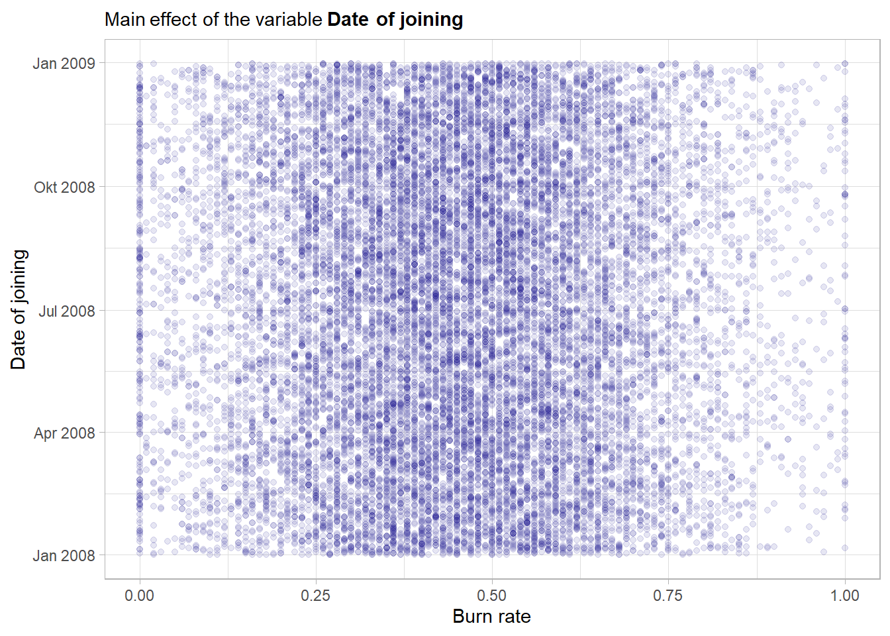
In its raw form the variable date_of_joining seems not to have a notable main effect on the outcome variable. Nevertheless the feature will be used in the model and as tree-based models have an in-built feature selection one can see after the fitting if the feature was helpful overall. The feature will not be included just as an integer (the default format how Dates are represented) but rather some more features like weekday or month will be extracted from the raw variable further down the road.
4.1.4.3 Gender
gender represents the gender of the employee. Definitely a categorical variable.
# have a look at the discrete distribution
summary(factor(burnout_train$gender))## Female Male
## 9101 8200The two classes are well balanced. Now a look at the main effect of the feature.
For both classes the distributions are very similar and symmetrical. It seems like the male employees have overall a slightly higher risk of having a higher burn score i.e. a burnout.
4.1.4.4 Company type
company_type is a binary categorical variable that indicates whether the company is a service or product company.
# have a look at the discrete distribution
summary(factor(burnout_train$company_type))## Product Service
## 6018 11283In this case the classes are not fully balanced but each class is still well represented. Now a look at the main effect of the feature.
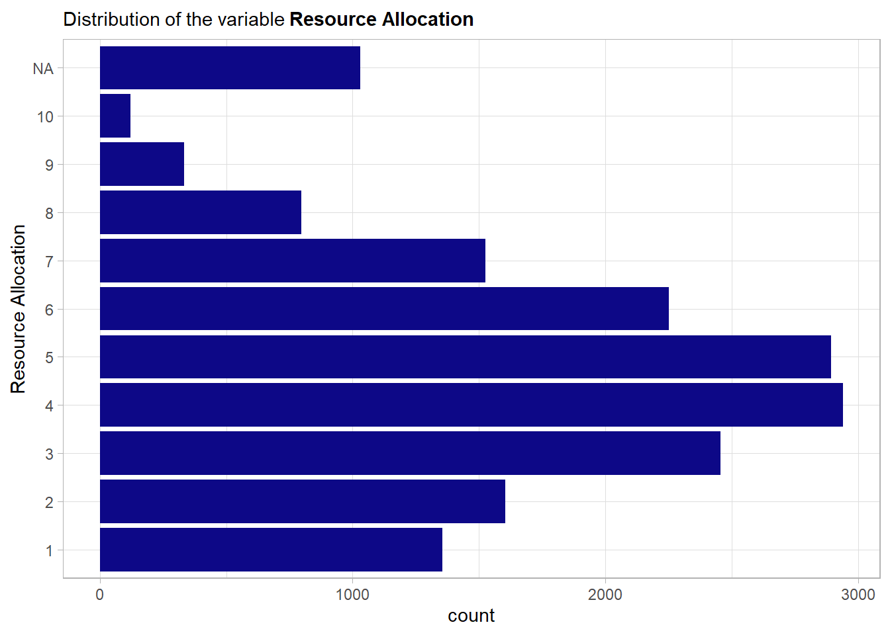
For both classes the distributions are almost identical and symmetrical. From an univariate point of view no notable main effect is visible from these visualizations.
4.1.4.5 Work from home setup
wfh_setup_available indicates whether a working from home setup is available for the employee. So this is again a binary variable.
# have a look at the discrete distribution
summary(factor(burnout_train$wfh_setup_available))## No Yes
## 7929 9372The two classes are well balanced. Now a look at the main effect of the feature.
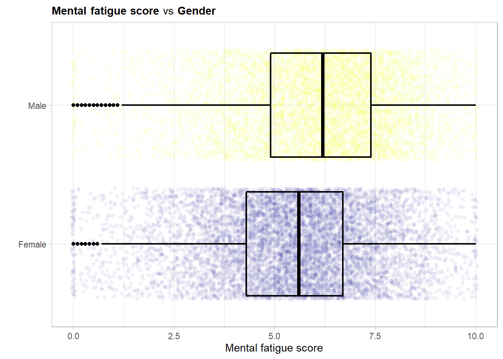
Again both distributions are quite similar i.e. bell shaped and symmetrical. Here quite a main effect is visible. A work from home setup most likely has a positive influence on the wellbeing and thus lowers the risk for a high burn rate.
4.1.4.6 Designation
designation A rate within \([0,5]\) that represents the designation in the company for the employee. High values indicate a greater amount of designation.
# unique values of the feature
unique(burnout_train$designation)## [1] 2 1 3 0 4 5As the feature has a natural ordering this variable will be treated as an ordinal one i.e. be encoded with the integers and not by one-hot-encoding.
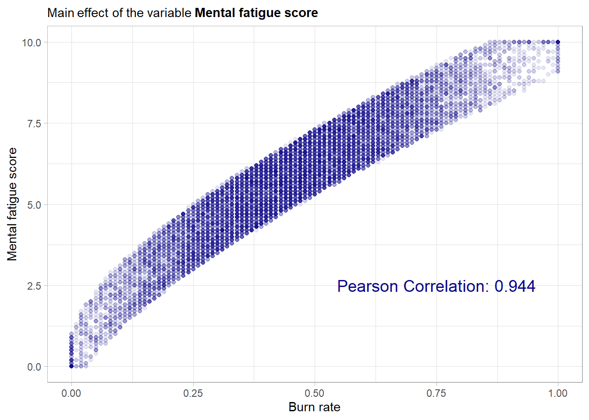
Here clearly the more extreme levels of designation are less represented in the data. This makes total sense w.r.t. the meaning of the variable.

A strong main effect is visible in the plot. The plot also further strengthens the hypothesis that we should treat the feature as ordinal. A higher level of designation seems to have an influence on the risk of having a burnout. For example employees from the training data set with a level of designation below 3 never even achieved a maximal burn score of one.
4.1.4.7 Resource allocation
resource_allocation A rate within \([1,10]\) that represents the resource allocation to the employee. High values indicate more resources allocated to the employee.
# unique values of the feature
unique(burnout_train$resource_allocation)## [1] 3 1 7 4 6 5 2 NA 8 10 9Here again the question is whether one should encode this variable as a categorical or an ordinal categorical feature. In this case as there are quite some levels and again a natural ordering the variable will be encoded as a continuous integer score.
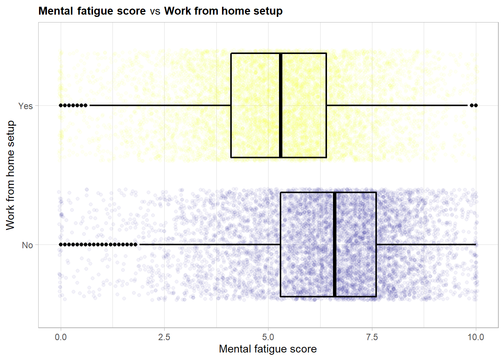
A similar behavior as the one of the previous variable is visible. But here there are some missing values (NA’s).
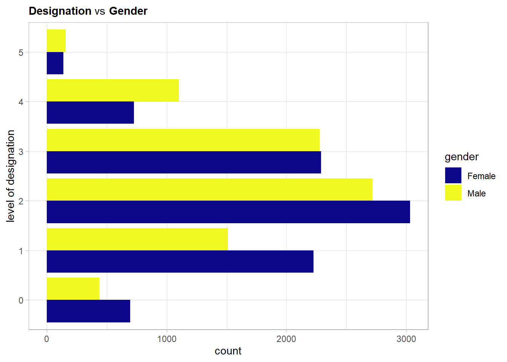
A strong main effect is visible in the plot. The plot again further strengthens the hypothesis that we should treat this feature as ordinal. A higher amount of resources assigned to an employee seems to have a positive influence on the risk of having a burnout. The missing values do not seem to have some structure as they replicate the base distribution of the outcome variable.
4.1.4.8 Mental fatigue score
mental_fatigue_score is the level of mental fatigue the employee is facing.
# number of unique values
length(unique(burnout_train$mental_fatigue_score)) ## [1] 102This variable will without a question be treated in a continuous way.
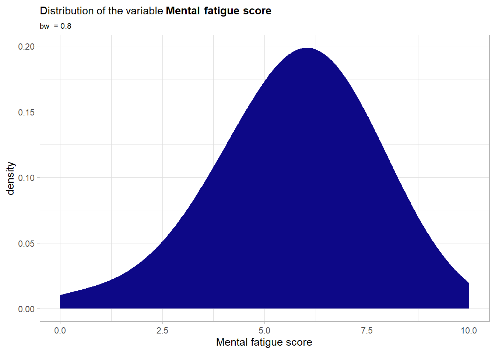
Although there is a very slight skew towards a higher mental fatigue score the overall distribution is still more or less bell shaped and quite symmetrical. Moreover the whole allowed range is covered and the bounds are not violated. Next the main effect of the variable.
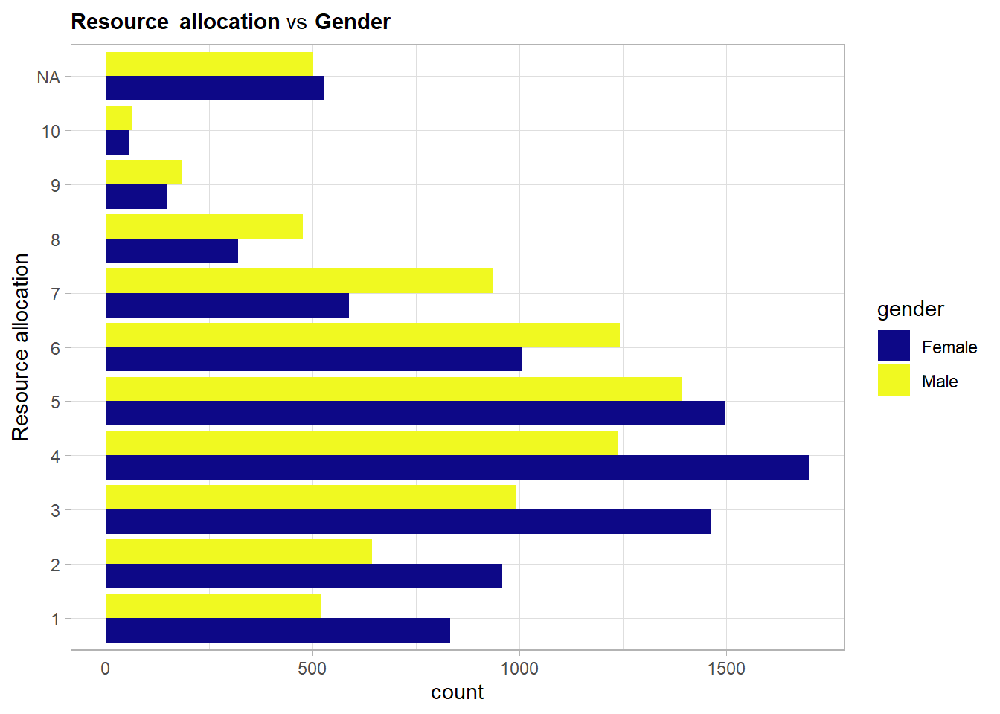
This scatterplot shows drastic results! The mental fatigue score has an almost perfect linear relationship with the outcome variable. This is also underlined by the very high pearson correlation. This indicates that mental fatigue score will be a most important predictor. If a communication with the data collector would be possible it would be important to check whether the two scores have common confounding variables as then one would have to question the practical usability of this predictor. This comes from the fact that no model would be needed if it was as hard to collect the data about the predictors as the outcome data. Moreover there are 1555 missing values in the feature so for those the model has to rely on the other maybe more weak predictors. It should be noted that when evaluating the final model one should consider to compare its performance to a trivial model (like a single intercept model). When constructing such a trivial model one could and maybe should also use this variable (when available) to get a trivial prediction by scaling the mental_fatigue_score feature by a simple scalar.
4.1.5 Relationships between the predictors
An exploration of the relationships between the predictors could also be done by having a look at a correlation and scatterplot matrix. This approach is much quicker than looking at each pairwise relationship individually but also not as precise as the one presented here. Especially for a lot of features such a matrix can get too big to grasp the subtle details. If this is necessary depends on the use case. A very good option if one wants an initial overview is the function GGally::ggpairs. So in the following each pairwise relationship will be covered.
4.1.5.1 Date of joining vs. the others
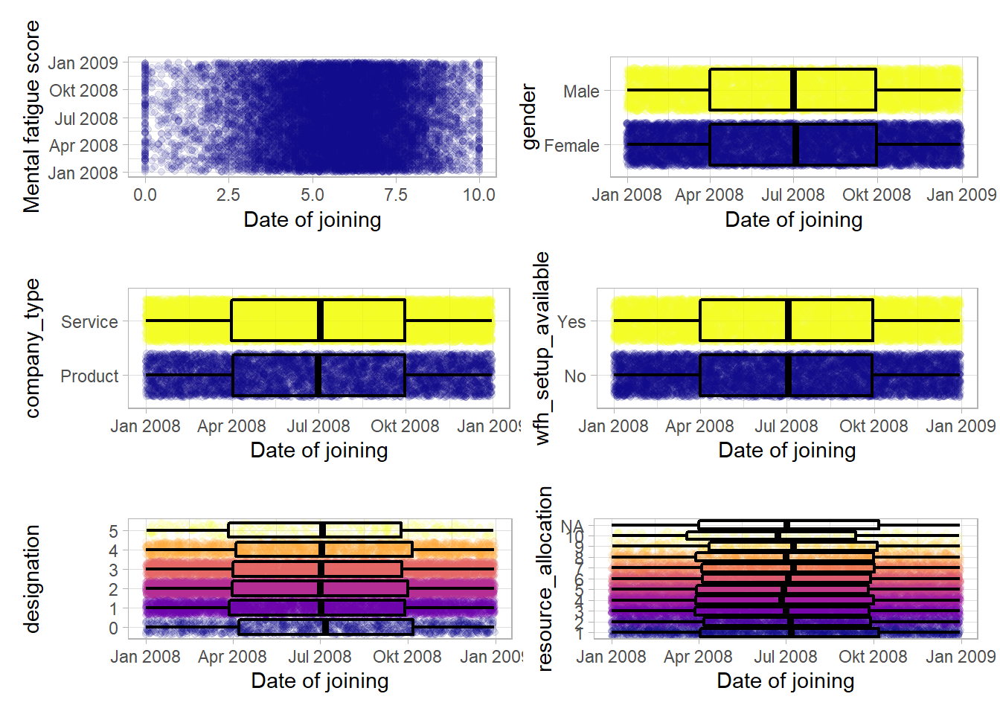
No major relationship can be detected here.
4.1.5.2 Gender vs. the remaining
Contingency tables for the comparison of two binary features:
# Gender vs Company type
table(burnout_train$gender, burnout_train$company_type)##
## Product Service
## Female 3097 6004
## Male 2921 5279No huge tendency visible.
# Gender vs Work from home setup
table(burnout_train$gender, burnout_train$wfh_setup_available)##
## No Yes
## Female 3835 5266
## Male 4094 4106Slightly more women have a work from home setup available.
Now the ordinal variables:
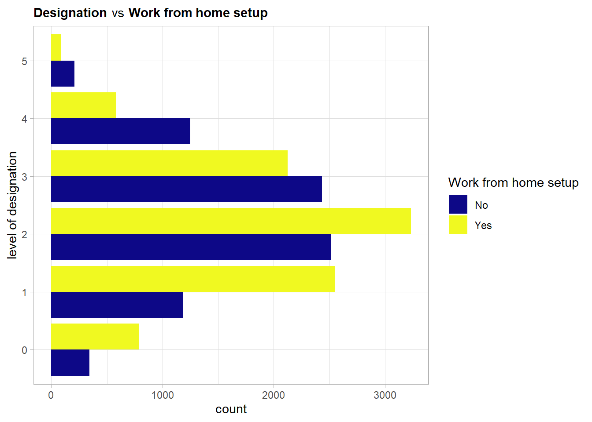
It has to be noted again that female and male emplyees are almost equally represented in the data set. Thus one can see from the above plot that the biggest difference in distribution is for the levels 1 and 4 with opposing effects. While male employees more often have a quite high designation of 4 females are the much more frequent employee with designation level 1.
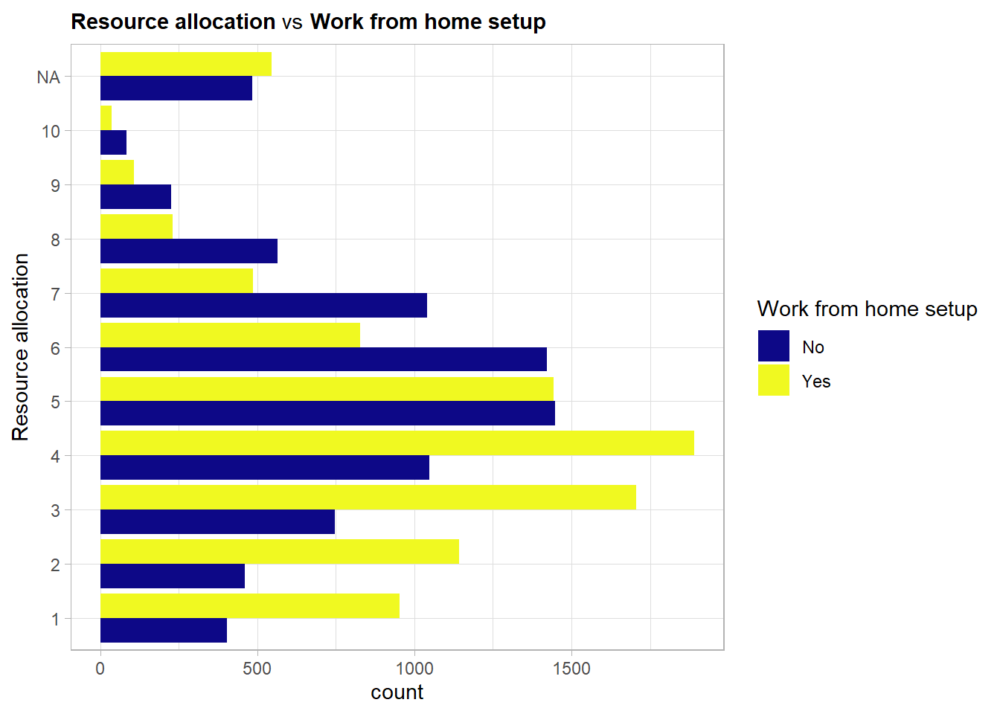
Here a major shift in distribution is visible towards men getting more resources allocated to them. This reflects the society that still promotes men much more often to high paying jobs that most often come with resource responsibility.
Now the mental fatigue score:
This is of course very similar to the main effect of the gender variable as the outcome and the feature mental_fatigue_score are highly linearly correlated.
4.1.5.3 Company type vs. the remaining
# Company type vs Work from home setup
table(burnout_train$company_type, burnout_train$wfh_setup_available)##
## No Yes
## Product 2764 3254
## Service 5165 6118No notable trend.
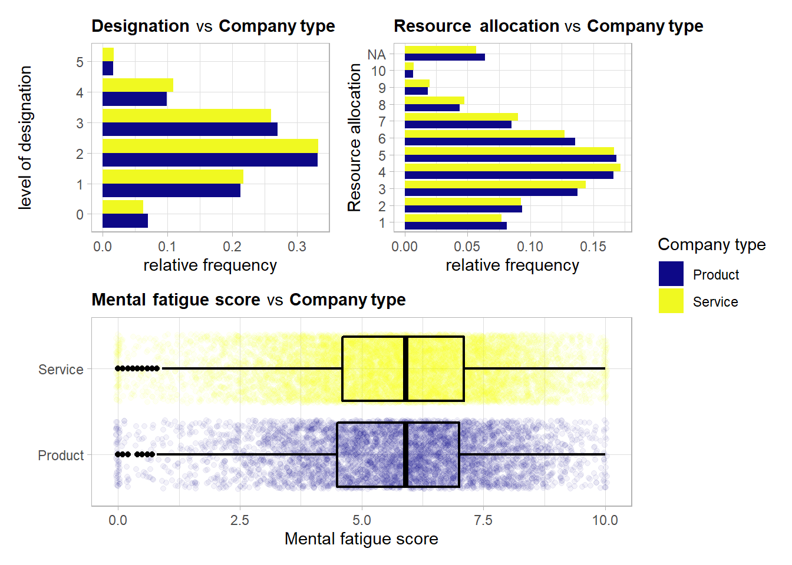
No trend here either.
4.1.5.4 Work from home setup vs. the remaining
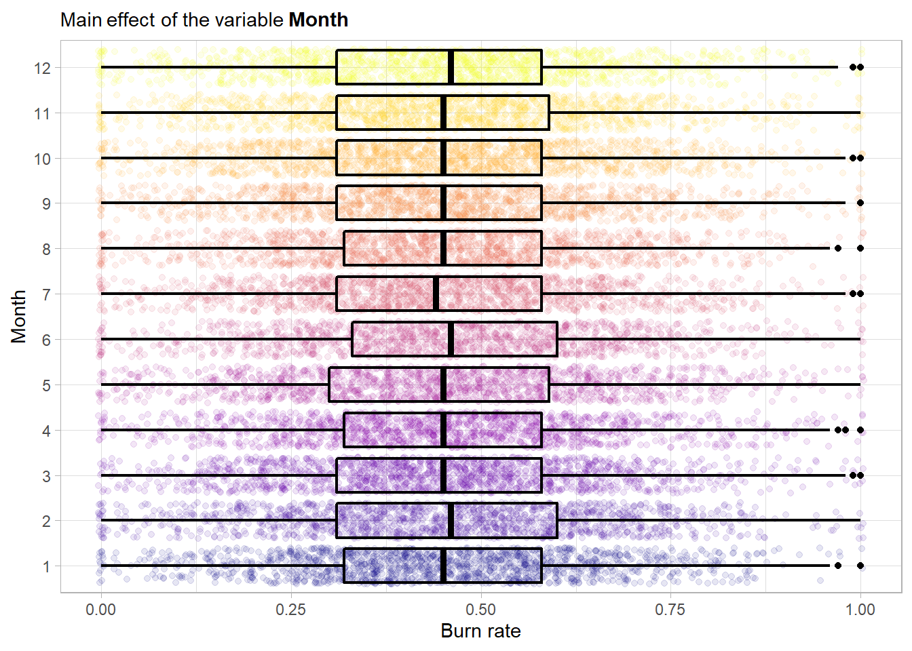
A work from home setup is way more often available for employees with a lower designation (\(\leq 2\)).
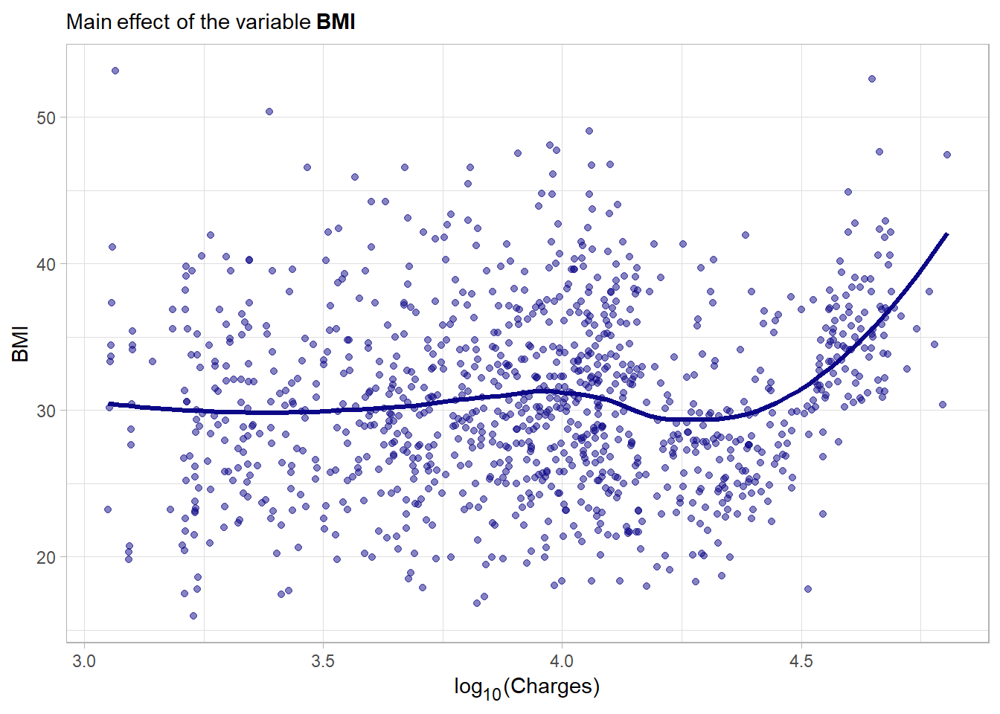
The same structure as in the previous comparison is visible here again. Employees with a lower amount of resources allocated to them have more often a work from home setup available. This could be due to the fewer responsibilities they have in the business.
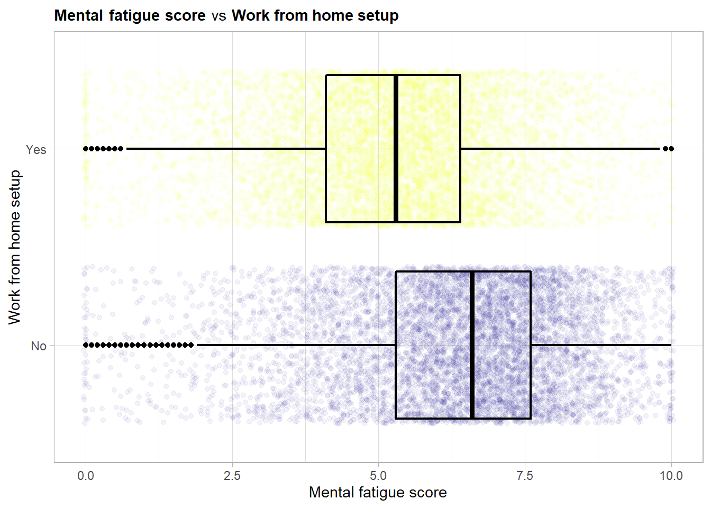
Again this is of course very similar to the main effect of the wfh_setup_available variable as the outcome and the feature mental_fatigue_score are highly linearly correlated.
4.1.5.5 Designation vs the remaining
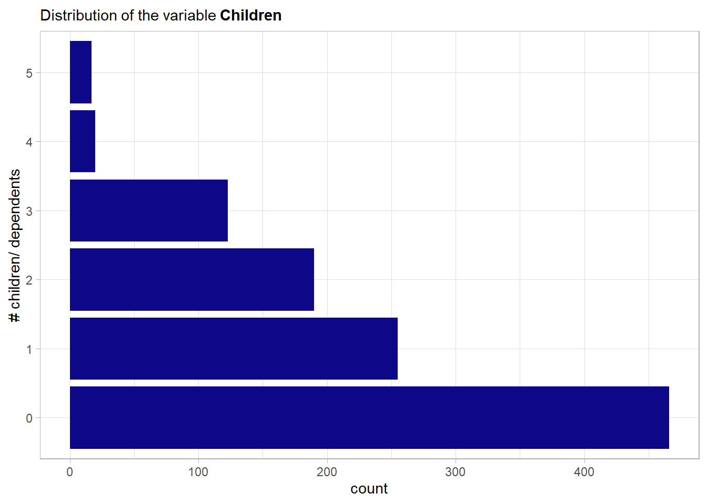
Here a strong quite linear relationship is visible. This is sensible as often more resource responsibility is given to employees with high designation.
The last two relationships will be omitted here as both for the variable designation as well as for resource_allocation the comparison with mental_fatigue_score will be very similar to the main effect of the two variables. This comes again from the high correlation of the latter with the outcome.
Overall some stronger and mainly less strong relationships between the predictors could be detected. Not like in ordinary least squares regression for gradient tree boosting no decorrelation and normalization of the features is needed. But before one fixes the pre-processing one can try to extract some more information from some features through some feature engineering.
4.1.6 Some feature engineering
The only variable that allows for reasonable feature engineering is the date of joining predictor. One can try to extract some underlying patterns and see if an effect on the outcome is visible.
First extract the day of the week:
No main effect is visible here. So try the month next.
Again no main effect is visible.
Nevertheless one can include those two variables into the model because as mentioned before tree-based models actually perform a feature selection at each split. So including these just comes at a small computational cost. This minimal pre-processing that is needed when dealing with tree-based models is actually one of its biggest strengths. It is very robust against any kind of weird selection of features with different scales for example. This is one of the reasons, beside the strong predictive power, for the heavy use of such models in data mining applications.[1]
4.1.7 Create the recipe
A recipe is an object that defines a series of steps for data pre-processing and feature engineering.
### recipe for xgboost (nominal variables must be dummy variables)
# define outcome, predictors and training data set
burnout_rec_boost <- recipe(burn_rate ~ date_of_joining + gender +
company_type + wfh_setup_available +
designation + resource_allocation +
mental_fatigue_score,
data = burnout_train) %>%
# extract the date features day of the week and month
step_date(date_of_joining, features = c("dow", "month")) %>%
# dummify all nominal features
step_dummy(all_nominal()) %>%
# encode the date as integers
step_mutate(date_of_joining = as.integer(date_of_joining))
### recipe for a random forest model for comparison (no dummy encoding needed)
# same as above without dummification but here the na's have to be
# imputed (here via knn)
burnout_rec_rf <- recipe(burn_rate ~ date_of_joining + gender +
company_type + wfh_setup_available +
designation + resource_allocation +
mental_fatigue_score,
data = burnout_train) %>%
step_string2factor(all_nominal()) %>%
step_knnimpute(resource_allocation, neighbors = 5) %>%
step_knnimpute(mental_fatigue_score, neighbors = 5) %>%
step_date(date_of_joining, features = c("dow", "month")) %>%
step_mutate(date_of_joining = as.integer(date_of_joining))4.2 Insurence data
The insurance data set is part of the book Machine Learning with R by Brett Lantz. It can be downloaded here: https://raw.githubusercontent.com/stedy/Machine-Learning-with-R-datasets/master/insurance.csv
# load the data
insurance_data <- read_csv("_data/insurance.csv")4.2.1 Train-test split
set.seed(2)
ins_split <- rsample::initial_split(insurance_data, prop = 0.80)
ins_train <- rsample::training(ins_split)
ins_test <- rsample::testing(ins_split)4.2.2 A general overview
A general visualization of the whole data set in order to detect missing values.
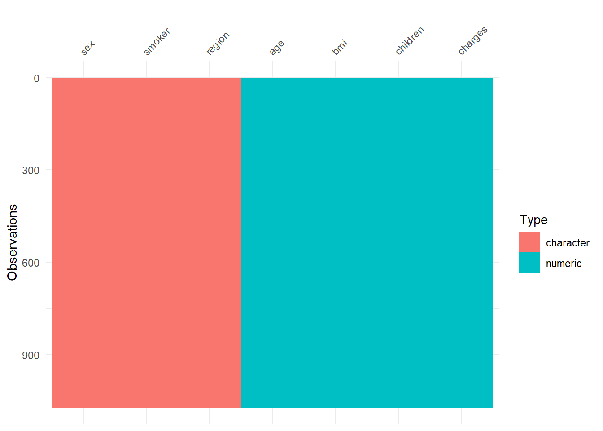
So there are no missing values!
4.2.3 What about the outcome?
charges: Individual medical costs billed by health insurance.
The five point summary below shows that the no invalid values i.e. negative ones are in the data.
## Min. 1st Qu. Median Mean 3rd Qu. Max.
## 1122 4703 9433 13128 16436 63770Now the distribution of the outcome.

Not like the burn_rate previously this target distribution is not at all symmetrical but highly right skewed. A natural thing to do would be a log transformation of the outcome. The resulting log_charges outcome variable is shown below.
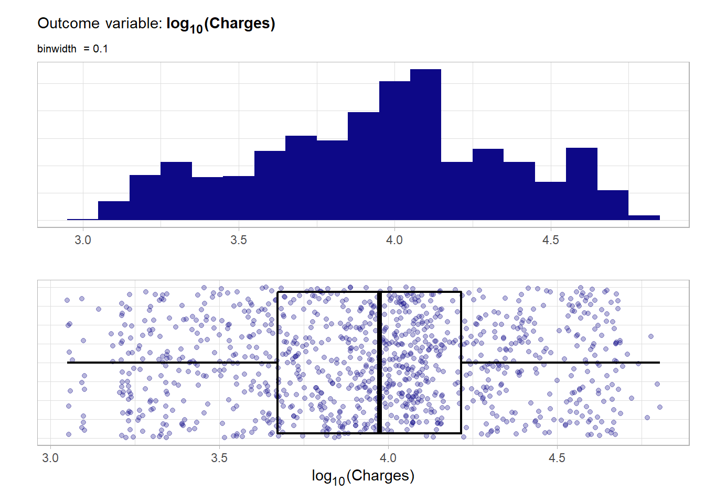
Although such a transformation of the outcome variable is not needed for tree-based modeling it can make the job of the algorithm somewhat easier.
4.2.4 Distribution and main effects of the predictors
4.2.4.1 Age
age: The age of the insurance contractor. This is naturally a continuous variable.

A wide range of ages is covered. Notably there is a peak at roughly 18 which means that many fresh adults were observed in this data set.
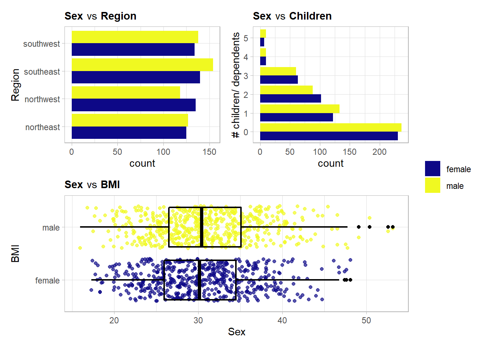
There seems to be a strong main effect although it does not seem to be linear. The general trend is that older contractors generally accumulate more medical costs. This is very intuitive.
4.2.4.2 Sex
sex: The insurance contractors gender. Here either female or male. This means it is a binary variable and will be treated as such.
summary(as.factor(ins_train$sex))## female male
## 534 537The classes are very well balanced. Now the main effect.
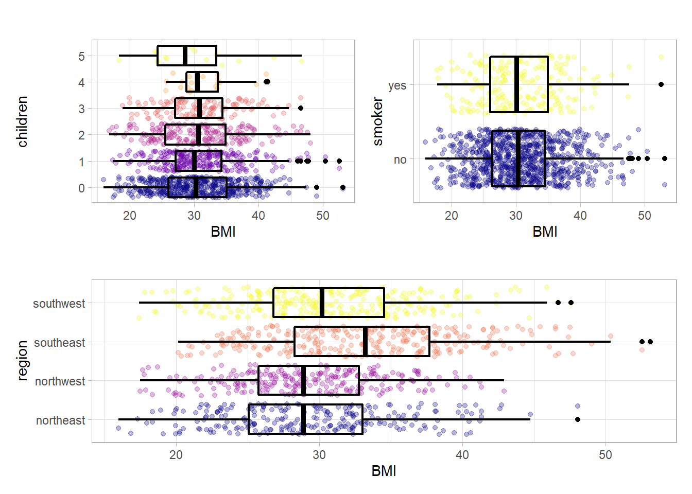
No notable difference can be detected here.
4.2.4.3 Body mass index
bmi: The body mass index is providing an understanding of the body composition. It is a ratio composed out of the weight which is divided by the height \(\frac{kg}{m^2}\). Ideally the ratio is between 18.5 and 24.9. The variable is obviously a continuous variable.
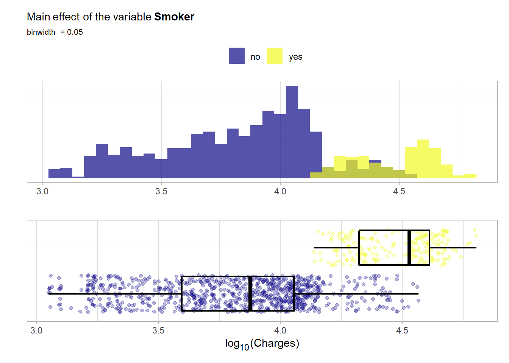
The distribution is bell-shaped and symmetrical roughly around a bmi of 30 which is above the ideal range. Actually only a small amount of the data falls into the normal range here. Moreover the right tail is heavier than the left one. Now a look at the main effect of the variable.
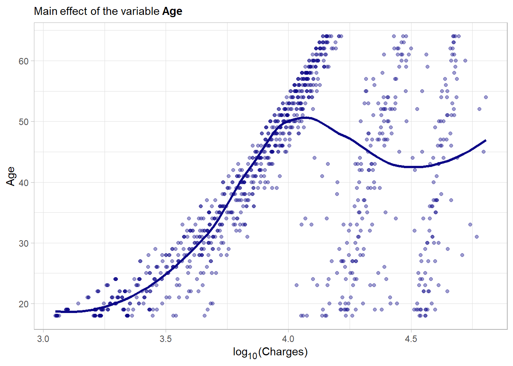
With some fantasy one can grasp some non-linear patterns on the right side of the plot but beside that no strong main effect is visible here.
4.2.4.4 Number of children
children: The number of children or dependents covered by the health insurance.
# unique values of the feature
unique(ins_train$children)## [1] 0 1 3 2 5 4This could be treated as categorical but as there is a natural ordering it will be encoded by the integers so the treatment is like the one of a continuous feature.
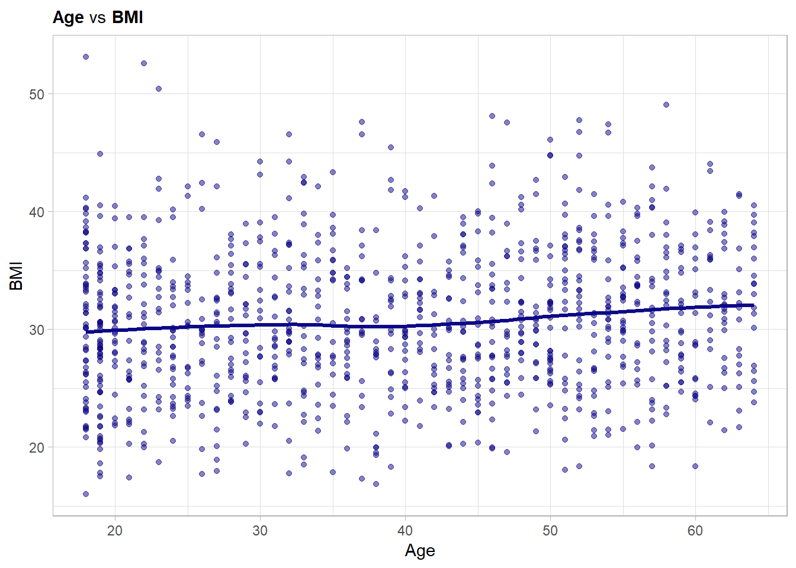
As one would also think the more children the lower the number of observed values. Especially the numbers greater than 3 are not well represented. If encoded by one-hot-encoding one would have to think about removing these then near-zero-variance variables. But as they will be encoded in a continuous way this is no problem at all. A look at the main effects can now strengthen or weaken this hypothesis of a natural ordering.
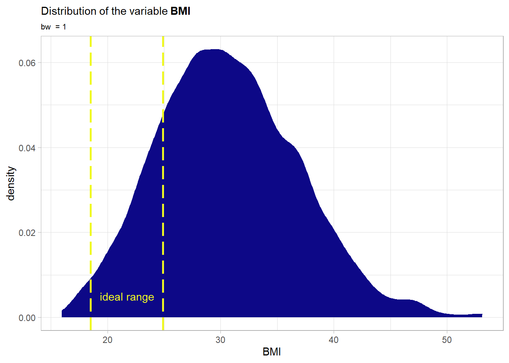
This plot is quite similar to the main effect plot for the age feature. As most likely (will be checked later) the age is positively correlated with the number of children one can observe a rise of the minimal observed charges towards a greater amount of children. The upper two boxplots are built with just a few observations so they should not be interpreted in great detail. Overall there seems to be some kind of main effect.
4.2.4.5 Smoking
smoker: Is the contractor smoking? Of course a binary variable.
summary(as.factor(ins_train$smoker))## no yes
## 859 212The classes are not balanced but the class of the smokers is still represented with a good amount of observations. Now a look at the main effect.

This main effect is as drastic as it is intuitive. Smoking seems to definitely increases the charges. This means that this variable has probably a lot of predictive power.
4.2.4.6 Region
region: The beneficiary’s residential area in the US. Either northeast, southeast, southwest or northwest. This definitely is a categorical variable.
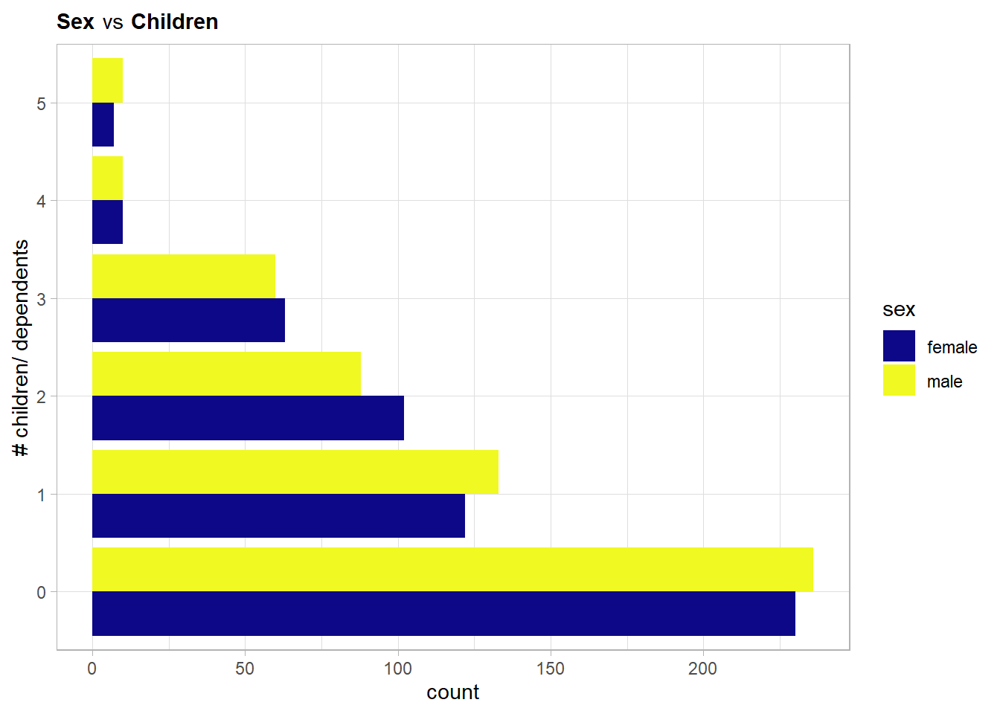
The four regions are balanced. Now to the main effect.
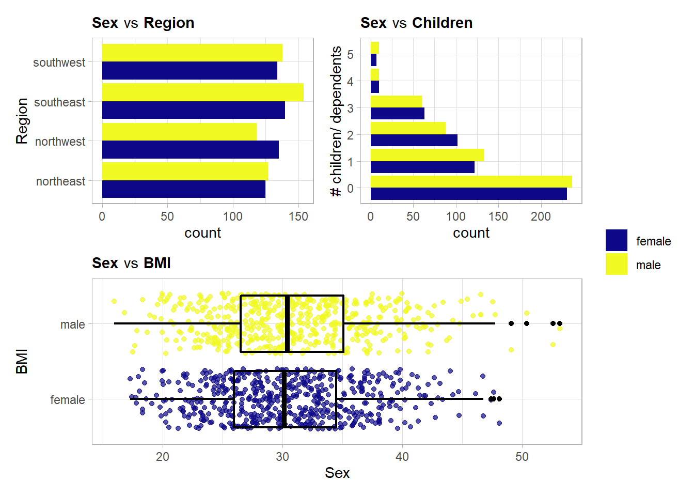
No important main effect is detectable from this plot.
4.2.5 Relationships between the predictors
4.2.5.1 Age vs the others
First the continuous one: bmi
No relationship detectable. The pearson correlation is with 0.109 also low.
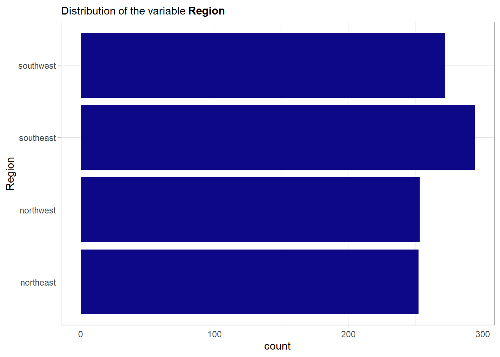
The most interesting take away from these four plots is that the hypothesis about the age of the contractors with children seem to be okish except for the ones with more than 3 children. But again this counterintuitive behavior could also be due to the few samples. At this point one might think about encoding the children variable as a categorical but in the following it will be left continuous.
4.2.5.2 Sex vs the remaining
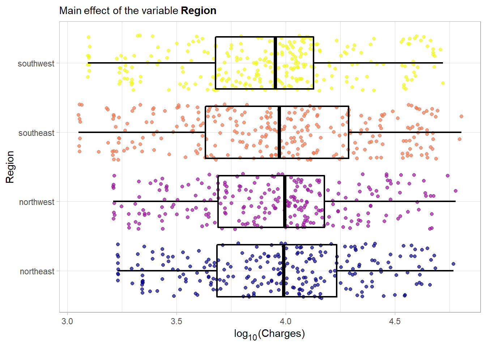
No notable differences.
Contingency table for the binary variable smoker:
# sex vs smoker
table(ins_train$sex, ins_train$smoker)##
## no yes
## female 450 84
## male 409 128Slightly more men smoke but the difference is smallish.
4.2.5.3 BMI vs the remaining
The most notable fact here is that southeast of the US seems to be a little more overweight than the rest.
4.2.5.4 Children vs the remaining
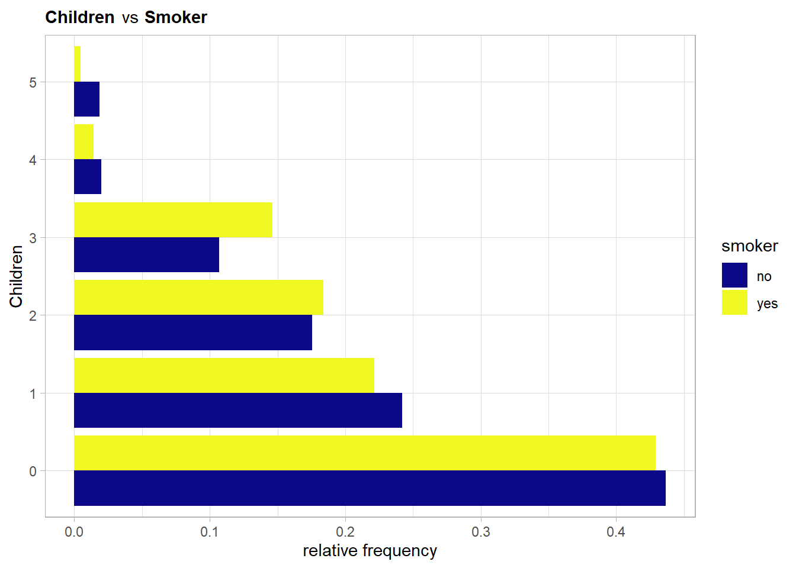
In relative terms actually the contractors with three children smoke the most but the other levels seem quite balanced.
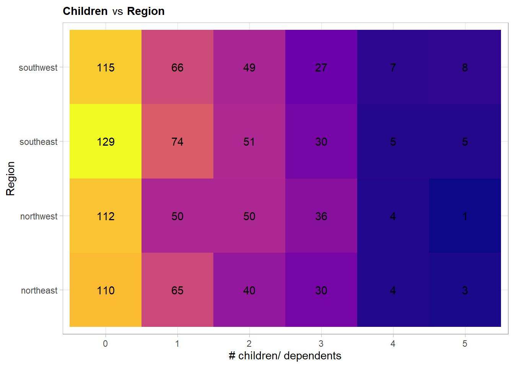
Here no trend is visible.
4.2.5.5 Smoker vs Region
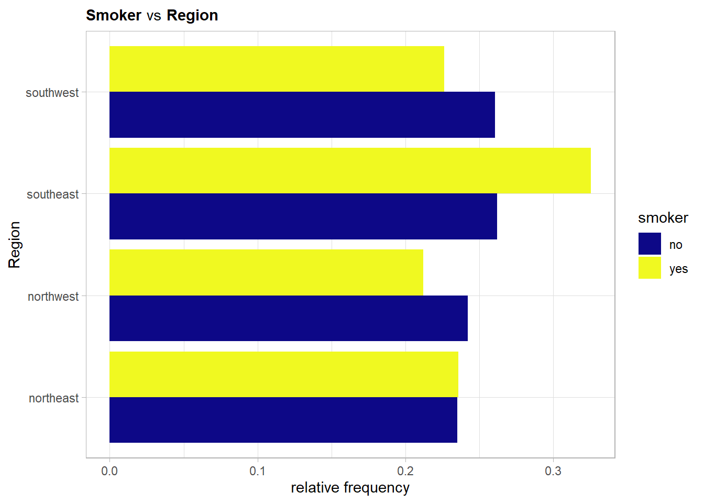
So the southeast is not only the most overweight region but also the one with the most smokers in relative terms.
This concludes the tour of the pairwise relationships. Of course such an in detail look at all pairwise relationships for both data sets was only possible because there are quite few predictors and is not always needed in this extend. Besides a crystal clear understanding of the data one sees that there is not much room left for feature engineering for the insurance data set. Thus one can go on and define the recipe.
4.2.6 Create the recipe
Transformations on the outcome variable are not good practice within a recipe thus this will be done now before hand by adding a new feature i.e. log10_charges to the train and test data set.
# add the log transformed outcome variable to the data
ins_train$log10_charges <- log10(ins_train$charges)
ins_test$log10_charges <- log10(ins_test$charges)### recipe for xgboost (nominal variables must be dummy variables)
# define outcome, predictors and training data set
ins_rec_boost <- recipe(log10_charges ~ age + sex +
bmi + children +
smoker + region,
data = ins_train) %>%
# dummify all nominal features (sex, smoker, region)
step_dummy(all_nominal())
### recipe for a random forest model for comparison (no dummy encoding needed)
# same as above without dummification
ins_rec_rf <- recipe(log10_charges ~ age + sex +
bmi + children +
smoker + region,
data = ins_train)Having now all the recipes ready one can proceed with modeling. Finally!